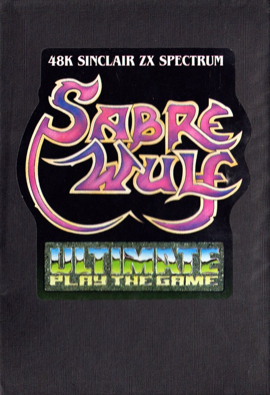
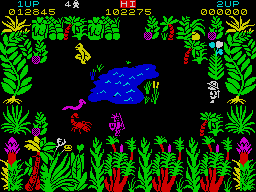
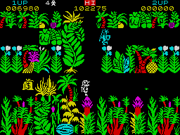
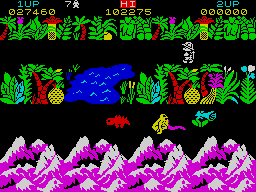
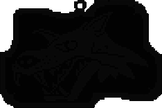

Sabre Wulf


{kind=link}

| Publisher: | Ultimate |
| Price: | £9.95 |
| Year: | 1984 |
| Source: | CRASH, Issue 6 |

In most respects this is probably the most redundant review in this issue! By the time you read it, it would be surprising if you aren’t already an expert at playing Sabre Wulf, the latest game from Ultimate. Due to the inevitability of the natural law which states: Ultimate will always release a new game at the last possible moment before CRASH goes to press — we have had to do this one backwards in order to get any colour pictures fitted in! So below you will find the criticisms, and on the opposite page the general bits and pieces with the pictures.

It is, perhaps, almost redundant making an Ultimate game a CRASH SMASH. From the moment the first ad for Sabre Wulf appeared, the question we have heard most is, ‘Is it out yet?’ Those rumours which suggested that Sabre Wulf would be like Atic Atac are, in many ways, correct. What we have here is another Ultimate mystery with a glossy, cryptic scenario, a long cast list of the horrors to be encountered, and very little else. As in Atic Atac, the player is expected to explore, discover and die endlessly until things begin to slot into place. Also as in Atic Atac, the game plays in a massive maze where at any moment you will be able to see a place you would like to reach and no obvious way of getting there.

Unlike Atic Atac there is no pickup/drop key, and consequently no info box to tell you what you are carrying or how strong you are. This deepens the mystery. How are you to know whether you are on the right track? (Forgive the maze-like pun.) The only starting point is the dire WARNING etched deep into lifeless stone and reprinted on the insert. Put together the four sundered pieces of what must be an ACG Amulet so you can pass the keeper wrought with hate and gain an entrance to the gate.
Any review of Sabre Wulf at this point could only scratch the surface of the game’s complexity. But it’s safe to say that, like Atic Atac, it will endure.

What we do have immediately is a glowing screen full of colour, intricately drawn graphics, constant animation and action and a desperate desire to get on with it and find out what’s going on in this tangled jungle world. Ultimate are very good at designing games without explanation or hint, but at providing enough clues in the action itself for you to try out things. In this sense both Atic Atac and Sabre Wulf are really like graphic adventures. It is up to you, the player, to find solutions to the problems. The very fact that the problems exist is a guarantee that there will be a solution — if only you can discover the right combination of events.
CRITICISM
‘After waiting a week in a state of extreme anxiety for the phone call to say, “IT’S HERE!” I almost fainted when it came. Then came the blow. They told me I only had two hours to get it reviewed! But it takes almost that long to load! In two hours, all you can do is run around like mad, try and stay alive and explore the countryside. Or rather the jungleside. I did get to see natives, spiders, scorpions, lively and sleepy hippos, dancing flames and I picked up all sorts of things. I also saw lakes and mountains and got chased by the Wulf or a wulf anyway. As to how the game plays, it is going to take longer, but the graphics are fabulous — detailed, colourful, varied, extremely well animated and very fast. The sound is great too. After a short time I am convinced it’s better than Atic Atac. Time will tell. Pity about the steep price increase, but I think the game is worth the money.’
‘In my opinion this is “state of the art” Spectrum software. It’s basically a jungle version of Atic Atac but much more involved (and better too). The graphics are superb and extremely colourful. Many animals are to be found and there are lots of game features. I felt that I had travelled for miles yet only attained 25% — Indiana Jones eat your heart out! On the subject of aims Ultimate have included an inscription or warning. After some thought I took it to mean: get the four parts of the amulet and escape through the cave (without the amulet you cannot leave). I have two main criticisms, neither of them very serious. (1) Occasionally on two-player games with a Kempston, I was unable to move upwards until several lives had been lost. (2) The price of £9.95 is a steep increase from £5.50. Even so, I would still recommend it to anyone. It’s worth almost any two £5.50 games on the market. But I wonder whether this increase will mean an increase in its piracy. (In a plea to pirates I would like to say that their actions could mean that high-quality software such as this may tend to decrease!) As a final opinion all I am going to say is that this is a Software Masterpiece (anything less would be a gross understatement). Thanks, Ultimate.’
‘Sabre Wulf takes Atic Atac further. There is the search, the far from friendly creatures, the central mystery of what does what — but there is just a lot more of it. I managed in the short time allowed to get down to the bottom where you can see the mountains, passed the Wulf (who is much faster than you, don’t try to outrun him) and to the side mountains where I found I could leave the jungle and run along the mountain tops. Much further, though, is going to need more time! Fab graphics and sound, brill colours — words fail. It’s the game that counts — play the game.’
COMMENTS
| Control keys: | Ultimate’s famous QWERT combination |
| Joystick: | Kempston, Sinclair 2, Protek, AGF |
| Keyboard play: | Very responsive |
| Use of colour: | Excellent |
| Graphics: | Excellent |
| Sound: | Excellent |
| Features: | One or two-player games |
| Originality: | Top marks |
| General rating: | Despite a price increase, still good value. Probably Ultimate’s best game to date. |
| Ratings: | At short notice it has been difficult to give an actual rating for Sabre Wulf that would make sense and it’s probably redundant anyway. Let’s just say ‘unrateable!’ and leave it to you to decide. |
